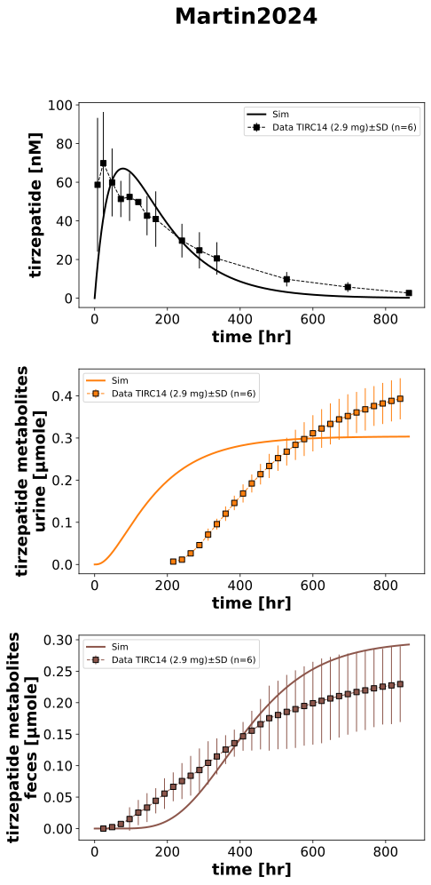

|  |
../../../experiments/studies/martin2024.py
from typing import Dict
from sbmlsim.data import DataSet, load_pkdb_dataframe
from sbmlsim.fit import FitMapping, FitData
from sbmlutils.console import console
from pkdb_models.models.tirzepatide.experiments.base_experiment import (
TirzepatideSimulationExperiment,
)
from pkdb_models.models.tirzepatide.experiments.metadata import Tissue, Route, Dosing, ApplicationForm, Health, \
Fasting, TirzepatideMappingMetaData, Coadministration
from sbmlsim.plot import Axis, Figure
from sbmlsim.simulation import Timecourse, TimecourseSim
from pkdb_models.models.tirzepatide.helpers import run_experiments
class Martin2024(TirzepatideSimulationExperiment):
"""Simulation experiment of Martin2024."""
colors = {
"plasma": "black",
"urine": "tab:orange",
"feces": "tab:brown",
}
tissues = list(colors.keys())
doses = {
# "TIR": 4.1, # mg
"TIRC14": 2.9, # mg
}
sinfo = {
"[Cve_tmtot]": "tir_and_tm_plasma",
"Aurine_tm": "tm_urine",
"Afeces_tm": "tm_feces",
}
def datasets(self) -> Dict[str, DataSet]:
dsets = {}
for fig_id in ["Fig3", "Fig4"]:
df = load_pkdb_dataframe(f"{self.sid}_{fig_id}", data_path=self.data_path)
for label, df_label in df.groupby("label"):
dset = DataSet.from_df(df_label, self.ureg)
if label.startswith("tir"):
dset.unit_conversion("mean", 1 / self.Mr.tir)
if label.startswith("tm"):
dset.unit_conversion("mean", 1 / self.Mr.tm)
dsets[f"{label}"] = dset
# console.print(dsets.keys())
return dsets
def simulations(self) -> Dict[str, TimecourseSim]:
Q_ = self.Q_
tcsims = {}
for dose_key, dose in self.doses.items():
tcsims[f"sc_{dose_key}"] = TimecourseSim(
[Timecourse(
start=0,
end=864 * 60, # [min]
steps=2000,
changes={
**self.default_changes(),
"SCDOSE_tir": Q_(dose, "mg"),
},
)]
)
return tcsims
def fit_mappings(self) -> Dict[str, FitMapping]:
mappings = {}
for k, sid in enumerate(self.sinfo):
name = self.sinfo[sid]
tissue_key = self.tissues[k]
if tissue_key == "plasma":
tissue = Tissue.PLASMA
elif tissue_key == "urine":
tissue = Tissue.URINE
elif tissue_key == "feces":
tissue = Tissue.FECES
mappings[f"fm_sc_TIRC14_{name}"] = FitMapping(
self,
reference=FitData(
self,
dataset=f"{name}_TIRC14",
xid="time",
yid="mean",
yid_sd="mean_sd",
count="count",
),
observable=FitData(
self, task=f"task_sc_TIRC14", xid="time", yid=sid,
),
metadata=TirzepatideMappingMetaData(
tissue=tissue,
route=Route.SC,
application_form=ApplicationForm.SUBCUTANEOUS,
dosing=Dosing.SINGLE,
health=Health.HEALTHY,
fasting=Fasting.FASTED,
coadministration=Coadministration.NONE,
),
)
return mappings
def figures(self) -> Dict[str, Figure]:
fig = Figure(
experiment=self,
sid="Fig3_Fig4",
num_rows=3,
name=f"{self.__class__.__name__}",
)
plots = fig.create_plots(
xaxis=Axis(self.label_time, unit=self.unit_time), legend=True
)
plots[0].set_yaxis(self.label_tir, unit=self.unit_tir)
plots[1].set_yaxis(self.label_tm_urine, unit=self.unit_tm_urine)
plots[2].set_yaxis(self.label_tm_feces, unit=self.unit_tm_feces)
for k, sid in enumerate(self.sinfo):
name = self.sinfo[sid]
tissue = self.tissues[k]
# simulation
plots[k].add_data(
task=f"task_sc_TIRC14",
xid="time",
yid=sid,
label=f"Sim",
color=self.colors[tissue],
)
# data
plots[k].add_data(
dataset=f"{name}_TIRC14",
xid="time",
yid="mean",
yid_sd="mean_sd",
count="count",
label=f"Data TIRC14 (2.9 mg)",
color=self.colors[tissue],
)
return {
fig.sid: fig,
}
if __name__ == "__main__":
run_experiments(Martin2024, output_dir=Martin2024.__name__)
{kind=link}